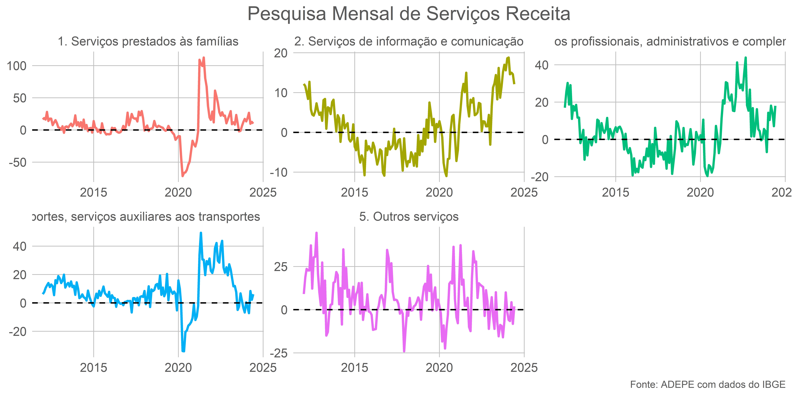
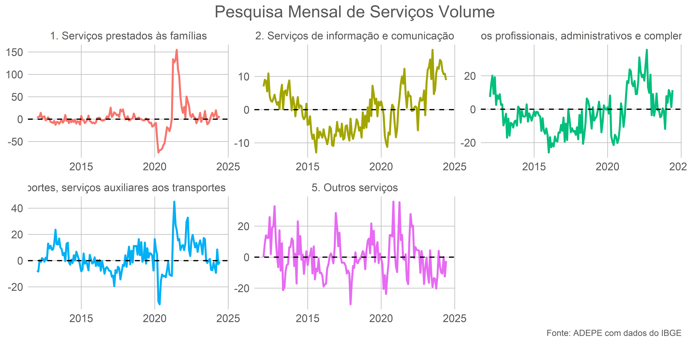
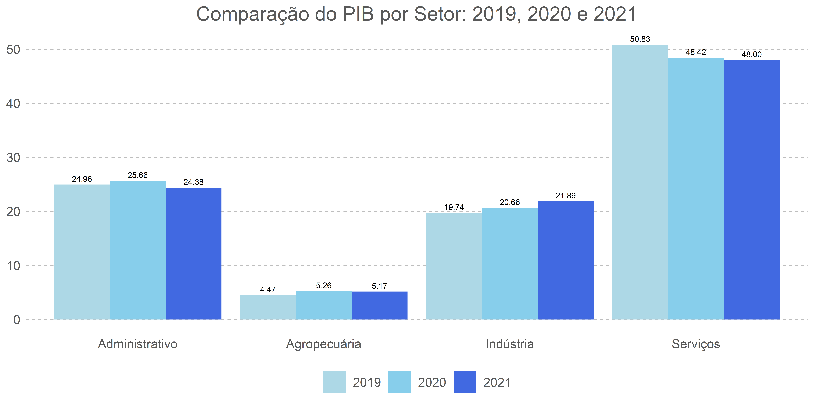
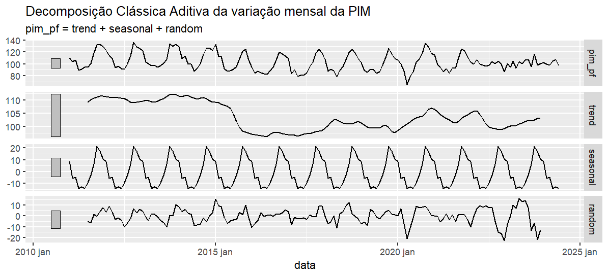
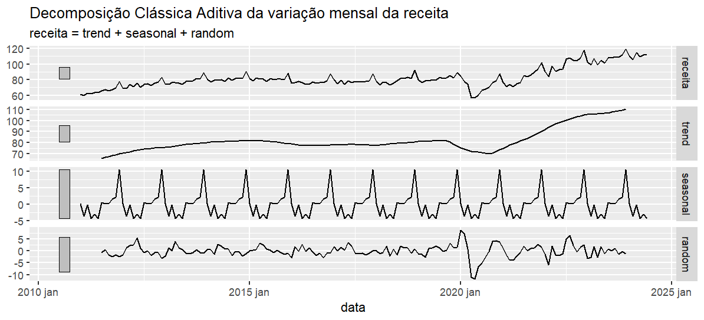
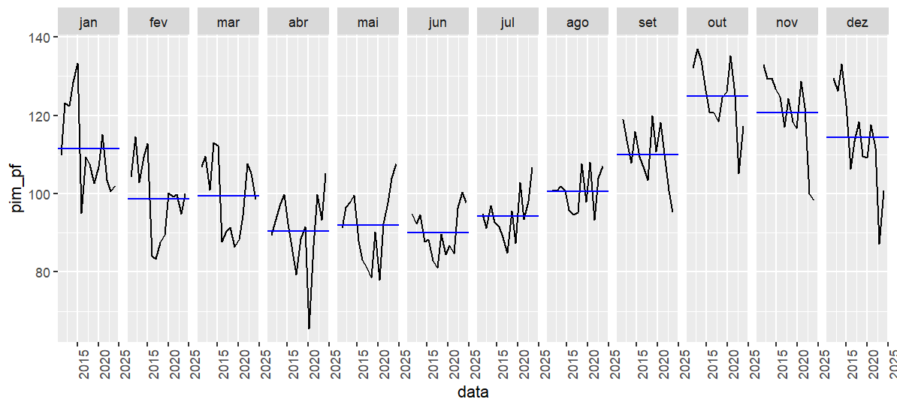

Relatório: Análise Dos Setores
Introdução
- Este relatório tem como objetivo analisar a evolução dos setores econômicos a partir das pesquisas divulgadas pelo IBGE. Busca-se observar a evolução desses setores ao longo do tempo, bem como as tendências das variáveis associadas. Além da análise setorial, também será explorada a série temporal da Pesquisa Industrial Mensal (PIM) e da Pesquisa Mensal de Serviços (PMS), com o intuito de identificar o impacto das tendências sazonais sobre essas séries
Nota
Interaja clicando nas tabelas e gráficos, para visualizar os resultado
Setores Nacional
Iniciando pelos resultados macroeconômicos, analisados a partir das Contas Nacionais Trimestrais (CNT), é possível observar o crescimento do PIB nacional e identificar quais setores se destacaram. No acumulado do período analisado, além do crescimento significativo da agropecuária e da indústria extrativa, os setores de serviços, como comércio e exportação de bens e serviços, também apresentaram desempenhos notáveis.
No entanto, alguns setores nacionais apresentaram resultados negativos no acumulado. A construção civil registrou uma queda de -0,30%, a indústria de transformação teve um crescimento modesto de 0,63%, e a Formação Bruta de Capital Físico (FBCF) caiu significativamente, com uma redução de -2,69%

Setores Estaduais
- Para entender como os resultados se comportaram dentro do estado, foram utilizadas as Pesquisas Mensais do IBGE, incluindo a Pesquisa Industrial Mensal (PIM), a Pesquisa Mensal de Serviços (PMS), e a Pesquisa Mensal do Comércio (PMC), além do resultado do PIB estadual, também disponibilizado pelo IBGE. No entanto, é importante notar que os dados do PIB estadual possuem uma defasagem de dois anos.
Setores Na Pim
- Os resultados dos setores apresentados a seguir referem-se à variação interanual. Nesta análise, não foi considerado o desempenho do mês imediatamente anterior (na margem), devido à alta sazonalidade. Entre os setores que se destacaram, estão a fabricação de bebidas, com um crescimento de 6,5%, metalurgia, com 6,15%, e a fabricação de produtos de metal, exceto equipamentos, que apresentou um expressivo aumento de 39%.


Setores na PMS
- Com essa métrica, é possível analisar o quanto determinado setor aumentou sua receita e volume de vendas ao longo do ano. Do lado da receita, todos os setores apresentaram crescimento em relação ao mesmo período do ano anterior, com destaque para os serviços profissionais, que registraram um aumento de 18%, e os serviços de informação, com um crescimento de 12%. Quanto ao volume de vendas, os destaques também vão para esses setores, com aumentos de 11% e aproximadamente 9%, respectivamente.


Setores na PMC
- A Pesquisa Mensal do Comércio (PMC) revelou variações diversas entre os setores (variação anual). Veículos, motocicletas, partes e peças lideraram com crescimento expressivo de 18% em volume de vendas e 19% em receita. Artigos farmacêuticos e livros, jornais e papelaria também se destacaram com aumentos significativos. Por outro lado, equipamentos de informática enfrentaram a maior queda, com uma redução de cerca de 27% tanto em volume quanto em receita. Setores como hipermercados e supermercados e combustíveis e lubrificantes mostraram crescimento moderado, enquanto tecidos, vestuário e calçados e material de construção registraram quedas.
| Data | Setor | Receita | Volume |
|---|---|---|---|
| 2024-06-01 | Livros, jornais, revistas e papelaria | 11.3 | 3.7 |
| 2024-06-01 | Equipamentos e materiais para escritório, informática e comunicação | -27.7 | -27.1 |
| 2024-06-01 | Outros artigos de uso pessoal e doméstico | 8.7 | 5.2 |
| 2024-06-01 | Veículos, motocicletas, partes e peças | 18.0 | 19.0 |
| 2024-06-01 | Material de construção | -2.2 | -1.1 |
| 2024-06-01 | Atacado especializado em produtos alimentícios, bebidas e fumo | 8.8 | 5.4 |
| Data | Setor | Receita | Volume |
|---|---|---|---|
| 2024-06-01 | Hipermercados e supermercados | 7.4 | 7.0 |
| 2024-06-01 | Tecidos, vestuário e calçados | -5.6 | -7.8 |
| 2024-06-01 | Móveis e eletrodomésticos | 0.7 | 3.3 |
| 2024-06-01 | Móveis | -1.3 | -1.7 |
| 2024-06-01 | Eletrodomésticos | 1.4 | 5.0 |
| 2024-06-01 | Artigos farmacêuticos, médicos, ortopédicos, de perfumaria e cosméticos | 9.5 | 2.6 |
PIB estadual
- Durante os períodos analisados no gráfico, a participação do setor de Serviços no PIB pernambucano caiu de 50,83% em 2019 para 48% em 2021. Por outro lado, o setor Agropecuário aumentou sua participação de 4,47% em 2019 para 5,17% em 2020, embora tenha sofrido uma leve redução em 2021. A Indústria apresentou um crescimento constante, passando de 19,74% para 21,89% no mesmo período. O setor Administrativo teve um aumento inicial, mas sua participação caiu de 24,96% em 2019 para 24,38% em 2021

Análise Temporal
Ao analisar as séries temporais ao longo do tempo, observam-se tendências distintas para a Pesquisa Mensal da Indústria (PIM) e para a receita. A série da PIM apresenta uma tendência de baixa a partir do primeiro trimestre, seguida por um aumento a partir de agosto. Em contraste, a receita mostra uma tendência de alta contínua ao longo do ano, com uma média que, embora varie, demonstra uma menor amplitude de variação.
No final do ano, observa-se um aumento significativo na receita, o que pode ser explicado pelo incremento natural da demanda durante esse período. Esse comportamento sazonal é comum e reflete o aumento das compras de fim de ano, que geralmente impulsiona as vendas e a receita.
“
“
“